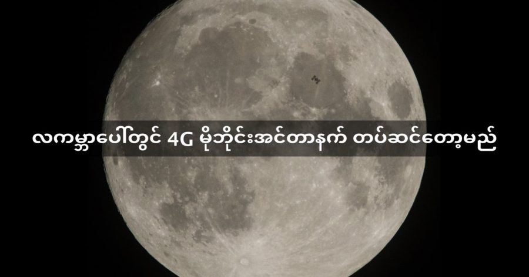

မိုဘိုင်းဖုန်းကုမ္ပဏီကြီးတွေဖြစ်တဲ့ Vodafone နဲ့ Nokia တို့ဟာ လပေါ်မှာ 4G မိုဘိုင်းအင်တာနက် တပ်ဆင်ဖို့ ပြင်ဆင်နေကြပါတယ်။ ဒီ 4G မိုင်ဘိုင်းအင်တာနက်ကို ၂၀၁၉ မှာ လပေါ်မှာ တပ်ဆင်သွားမှာဖြစ်တယ်လို့ အဆိုပါ ကုမ္ပဏီတွေက ပြောကြားလိုက်ပါတယ်။
ဒီမိုဘိုင်း အင်တာနက်စနစ်ကို ၁ ကီလိုဂရမ် (၂.၂ ပေါင်) လေးတဲ့ မိုဘိုင်းဖုန်း ထပ်ဆင့်လွှင့်စက်ကနေ တဆင့် ဆက်သွယ်ပေးမှာ ဖြစ်ပါတယ်။ ဒီစနစ်ကို Ultra Compact Network လို့ အမည်ပေးထားပြီး လပေါ်မှာ ပထမဆုံး တပ်ဆင်မယ့် မိုဘိုင်းဖုန်း စနစ်လဲ ဖြစ်ပါတယ်။ ဒီစနစ်ကနေပြီးတော့ HD ကွာလတီ ဗီဒီယိုတွေကို လနဲ့ ကမ္ဘာကြားမှာ ထုတ်လွှင့်ပေးသွားနိုင်ဖို့ ရည်ရွယ်ပါတယ်။ နောင်တချိန် ပုဂ္ဂလိက အာကာသ ခရီးသွားလာရေး ကုမ္ပဏီတွေက လပေါ်ကို ခရီးသည်တွေ ပို့ဆောင်တဲ့ အချိန်မှာ အင်တာနက် ရရှိဖို့ အကြိုစမ်းသပ်မှု အနေနဲ့ လုပ်ဆောင်တာလဲ ဖြစ်ပါတယ်။
ဒီ 4G စနစ်ကိုတော့ ၂၀၁၉ မှာ Space X အာကသယာဉ်ကို သုံးပြီး လွှတ်တင်မှာ ဖြစ်ပါတယ်။ တီထွင်တဲ့ သိပ္ပံပညာရှင်တွေဟာ နောက်ဆုံးပေါ် 5G စနစ်ကို မသုံးပဲ 4G စနစ်ကို ရွေးချယ်အသုံးပြုရတဲ့ အကြောင်းရင်းကတော့ 5G စနစ်ဟာ အခုမှ စမ်းသပ်ဆဲ စနစ်ဖြစ်တဲ့အတွက် အာကသထဲက အခြေအနေတွေကို ခံနိုင်ရည်ရှိမရှိ မသေချာလို့ပဲ့ ဖြစ်ပါတယ်။
Source:
BBC | Moon to get 4G mobile network
Live Science | Moon set to get its own mobile phone network
လကမ္ဘာပေါ်တွင် 4G မိုဘိုင်းအင်တာနက် တပ်ဆင်တော့မည်

February 28, 2018
Other Posts
- စကြာဝဠာ အတွင်းက ကိုယ်ပျောက် တံတိုင်းများ
- ကမ္ဘာ့အလယ်ဗဟို အူတိုင်ကိုဖြတ်ပြီး ပြုတ်ကျဖို့ အချိန်ဘယ်လောက် ကြာမလဲ
- ဘာ့ကြောင့် ချိုင်းချွေးနံ့ နံရတာလဲ
- ကျောင်းနောက်ကျလို့ ဒေါက်တာဘွဲ့ ရသွားသူ
- ကလေးတွေ ဘဝအောင်မြင်ရေးအတွက် Marshmallow Experiment ကပေးတဲ့ မိဘတွေအတွက် သင်ခန်းစာ
- မစ်ကီးဝေးရဲ့ ဗဟိုက ထူးဆန်းတဲ့ ရေဒီယို အချက်ပြလှိုင်းများ
- အထီးတခြမ်း အမတခြမ်း သတ္တဝါများ
- နက္ခတ် ပညာရှင် ထိုင်းဘုရင်ကြီး မောင်းကွတ်
- မြွေထီးတွေမှာ လိင်အင်္ဂါ နှစ်ခုပါတယ်ဆိုတာ သင်သိသလား
- ဆီစား သက်သာပြီး ကုန်နှစ်ဆ ပိုတင်နိုင်မယ့် ကုန်တင် လေယာဉ်သစ်